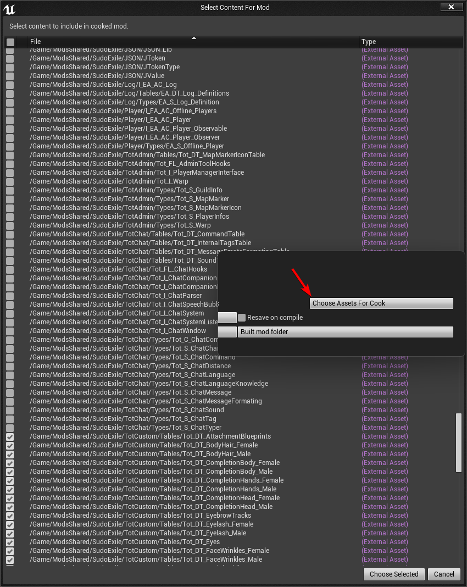

Tot ! Chat API
API Download
Note about Sudo
Since Tot ! Chat API is bundled with Sudo, you might aswell download sudo API directly, since Tot ! Chat require Sudo. Chat API is located in ModsShared/SudoExile/TotChat
You'll find the Sudo Discord and its documentation here.
Important instructions
1- Extract this into ConanExilesDevKit\Games\ConanSandbox\Content\ModsShared\
2- Do not modify any of the files in there
3- Do not put these files in your mod content folder and do not select them in the modfile list
If you do not follow those guidelines, whenever we update the API files, your mod is going to conflict whenever someone place it lower than Sudo in the modlist.
Common pitfall since 3.1
 Since a recent update of the Devkit, it is easy to pak by mistake API files in your mod. Please do check your file list and uncheck API files if you do not intend to pak them. Side effect of paking those file range from reintroducing bug if your mod is lower in the modlist, crash and other issues.
Internal Data Tables
Tot_DT_ChatCommandTable
This is the list of commands of Tot ! Chat as they are in its own datatable. One could use that to override some of them.
DownloadMain Interface Components
Tot_I_ChatCompanion
ModsShared/SudoExile/TotChat/Tot_I_ChatCompanion
This is a component located on an actor that need to be able to chat. For players, that would be located on BasePlayerChar. It is responsible to connect to the ChatSystem, handle the actor languages, send and received message and transmit them to the UI or from the UI. Since Sudo offer a way to change the chat, it is important for you to ask Sudo What is the current chat companion tag in order to get the right one. A few helper function are available in the TotChat API folder function library.
Tot_I_ChatSystem
ModsShared/SudoExile/TotChat/Tot_I_ChatSystem
This is the centralized component. It received all the messages, and redirect them to the appropriate channels that will redirect messages to the players that should receive them. Since Sudo offer a way to change the chat, it is important for you to ask Sudo What is the current chat system in order to receive the proper one. A few helper function are available in the TotChat API folder function library.
Tot_I_ChatSystemListener
ModsShared/SudoExile/TotChat/Tot_I_ChatSystemListener
Implement to the objects that should receive events from the Chat System. Implement the interface, then register your object to the chat system you want to listen event from, and that's it. Don't forget to actually unregister when your actor is about to get destroyed.
Tot_I_ChatCompanionListener
ModsShared/SudoExile/TotChat/Tot_I_ChatCompanionListener
Implement to the objects that should receive events from the Chat Companion. Implement the interface, then register your object to the chat companion you want to listen event from, and that's it. Don't forget to actually unregister when your actor is about to get destroyed.
Tot_FL_ChatHook
ModsShared/SudoExile/TotChat/Tot_FL_ChatHooks
This is a helper library, containing a few functions that will simplify the use of the API. There content could also help you understand some of the part of the API as examples.
Tot_S_ChatMessage
ModsShared/SudoExile/TotChat/Types/Tot_S_ChatMessage
EmitterUID Unique ID of the message emitter. If this does not correspond to a chat companion UID, the message will be refused. 1.0.0 and up, negative UID will correspond to a Headless message and will skip all the checks. This can be used to send notifications or playerless messages.
EmitterName Simply the name of the Emitter. A message without an EmitterName is the equivalent of using the NoName tag, but providing an emitter name and using the NoName tag `should' be the prefered way of doing it as Tot ! Chat can display the name in metadata.
ChannelID ID of the channel to send the message to. If you send the message through ChatCompanion.SendMessage, ChatCompanion.SendLowLevelMessage, or ChatSystem.SendMessage, this need to be a valid channel ID or the message will be disgarded. If you send the message directly through ChatCompanion.ReceiveMessage, a channel ID of zero will automaticly spawn the message in the currently opened channel.
Tags[] Message tags that define special behaviors for the message. Tags can be anything. Multiple source define some internal Tags. First, the InternalTag table, that define a bunch of tags with special formating. Those are used to color messages or bits of messages. You can inject your own tags in this table to add your own color scheme while allowing players to customize it. Second, some system tags are used all across Tot ! Chat to handle special behavior, see the message about tags above. Tags may also include Distance/Range.
Language Language use in the message. This will be compared with the language list of the receiving player for scrambling. Leave it at none to have a universaly understood message.
Message The message itself. Nothing more to it.
Distance French shenanigans, this is in fact the range in centimeters. This is only used by the Local Channel and can be left at zero if you do not intend to send the message through a local channel.
TargetUID This UID is only used by the UI to differenciate Linked channel from Owner Channel. This can be left at zero in Tot ! Chat 1.0.0 and up, as the ChatCompanion will take care of that.
Tot_S_ChatChannel
ModsShared/SudoExile/TotChat/Types/Tot_S_ChatChannel
ChannelID A unique number assigned when creating a channel. The unique ID generator will never use a previously used ID.
Name Name of the channel. On a side note, private channels between two player do not have a name as it is dynamicly changind with the name of the other player.
Password Password of the channel. For private channel, this field is used to store both player UID separated by an underscore.
Type Type of channel. This can technicly be anything, but their is a few preset one that will change the icon, color and code of the channel: Global, Local, Clan, Private. Any other name will fall to the Default channel type. "Custom" is a type used for channel created with the command "/channel create", but is a default channel otherwise.
Please note that creating private channel is technically not possible with the API. The code for those is not exposed.
UseLanguages This is more broadly the IRP flag. When true, features like language, ranges, emotes are turned on for the channel. I did not rename it for backward compatibility.
Notifications Does the channel display connections and disconnections from the channel.
OwnerUID This is a tricky part. On server side this is used to ID the creator of the channel. On Client its a bit more complicated, it is used to know if a channel is from your character point of view, or if it is a link channel.
Message Tags
These following tags can be used in the Tot_S_ChatMessage struct in the Type field to add various effect on your messages.
No_Bubble Avoid a message from being displayed in a bubble
NoName Remove the header part of the message containing the name of the character. Like an emote for example.
CC#FFFFFFFF Any tag starting with CC# will be parsed as a custom color for the character name with the 8 hexadecimal character following the #
CM#FFFFFFFF Any tag starting with CM# will be parsed as a custom color for the message content with the 8 hexadecimal character following the #
Notification Make a message a notification, using a specific color defined by the user or the default chat table
Warning Make a message a warning, using a specific color defined by the user or the default chat table
Alert Make a message a alert, using a specific color defined by the user or the default chat table
AutoSwitch When receiving a message with the AutoSwitch tag, the chat window will automatically switch to the channel that received the message.
Visual This is used by Tot ! Admin. Any message received on client that contain that tag will pop a notification window with the content of your message. Does not support formating.